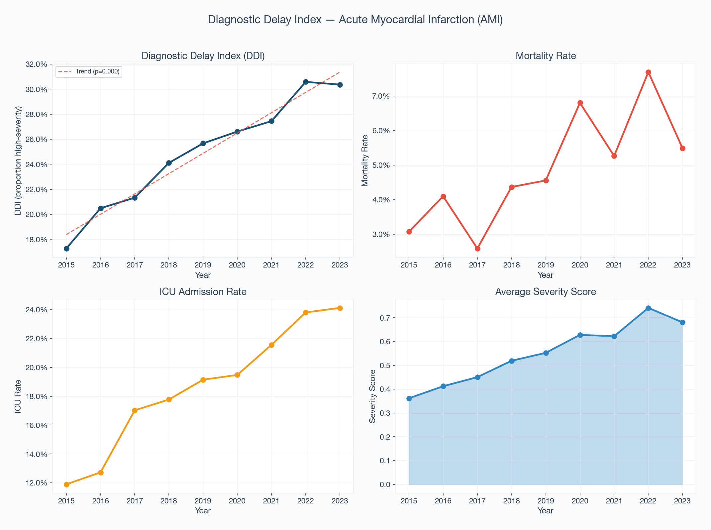
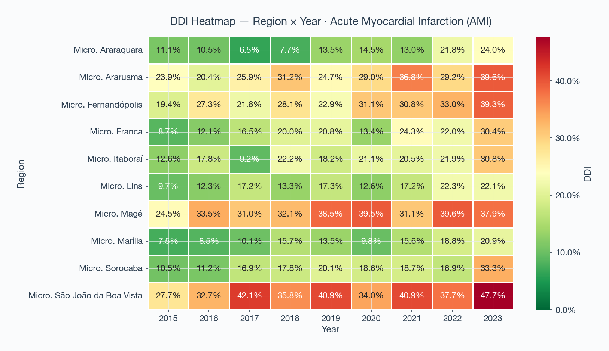
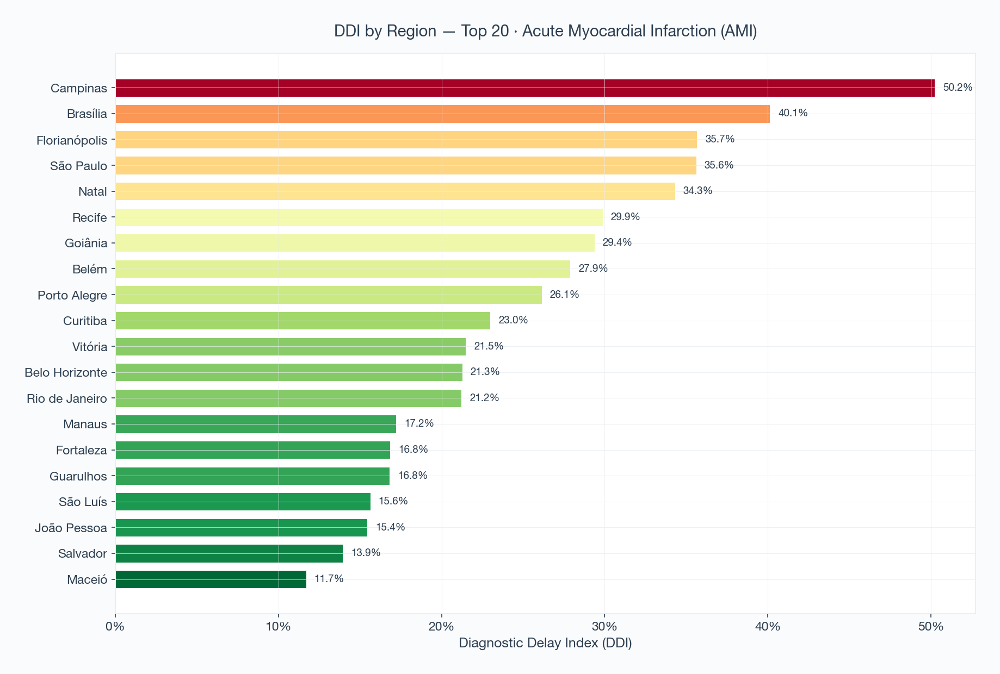
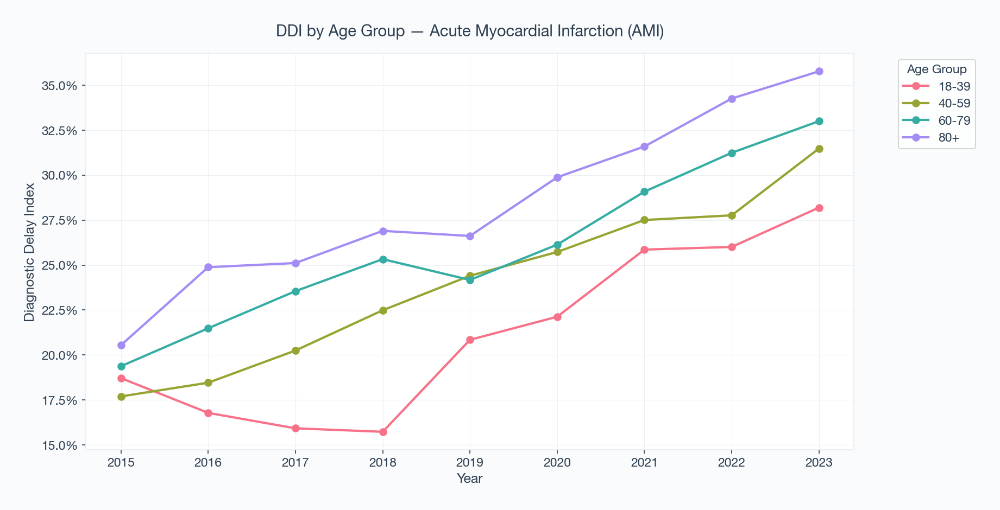

1. Clinical Interpretation and Statistical Summary
╔════════════════════════════════════════════════════════════════════╗
║ DIAGNOSTIC DELAY DETECTOR — CLINICAL INTERPRETATION REPORT ║
╚════════════════════════════════════════════════════════════════════╝
Condition: Acute Myocardial Infarction (AMI)
ICD-10 prefixes: I21
═══ CLINICAL INTERPRETATION — Acute Myocardial Infarction (AMI) ═══
⚠️ SIGNAL DETECTED: The Diagnostic Delay Index (DDI) shows a statistically significant INCREASING trend (p=0.0000) from 2015 to 2023.
This means a growing proportion of Acute Myocardial Infarction (AMI) patients are presenting at admission with indicators of advanced disease — including higher rates of ICU admission, mortality, and prolonged hospitalization.
📋 Possible explanations include:
1. Delayed access to primary care or diagnostic services
2. Barriers to seeking care (geographic, financial, cultural)
3. Reduced availability or effectiveness of screening programs
4. Changes in referral patterns or hospital admission criteria
5. Demographic shifts (aging population) increasing baseline severity
📊 Total change: +75.8% over the analysis period.
⚠️ IMPORTANT LIMITATIONS:
• The DDI is a PROXY measure. It does not directly prove diagnostic delay.
• Changes in coding practices, hospital capacity, or patient demographics
may affect these indicators independently of actual diagnostic timing.
• This analysis uses aggregate data without patient-level linkage.
• Ecological fallacy: population-level trends may not apply to individuals.
═══ COMPONENT ANALYSIS — Acute Myocardial Infarction (AMI) ═══
📈 Mortality Rate: increasing (p=0.0124, significant)
mortality among hospitalized patients
📈 ICU Admission Rate: increasing (p=0.0000, significant)
ICU utilization among admissions
📈 Average Severity Score: increasing (p=0.0000, significant)
composite severity measure
🚨 CONVERGENT SIGNAL: Both mortality AND ICU rates are increasing significantly. This pattern is strongly consistent with later presentation of Acute Myocardial Infarction (AMI), though confounding factors must be investigated.
═══ REGIONAL ANALYSIS — Acute Myocardial Infarction (AMI) ═══
Analyzed 20 regions with sufficient case volume (≥30 cases).
Mean DDI across regions: 25.2% (range: 38.5%)
⚠️ SUBSTANTIAL REGIONAL VARIATION detected. The 38.5% spread in DDI across regions suggests significant geographic disparities in disease severity at presentation.
Regions with higher DDI may face:
• Limited access to diagnostic facilities
• Shortage of primary care providers
• Geographic barriers to healthcare
• Socioeconomic factors affecting care-seeking behavior
🔴 Highest DDI regions (potential priority areas):
• Campinas: DDI = 50.2%
• Brasília: DDI = 40.1%
• Florianópolis: DDI = 35.7%
• São Paulo: DDI = 35.6%
• Natal: DDI = 34.3%
🟢 Lowest DDI regions:
• Maceió: DDI = 11.7%
• Salvador: DDI = 13.9%
• João Pessoa: DDI = 15.4%
• São Luís: DDI = 15.6%
• Guarulhos: DDI = 16.8%
═══ AGE-ADJUSTED ANALYSIS ═══
📈 18-39: increasing (p=0.0204) ✓
📈 40-59: increasing (p=0.0013) ✓
📈 60-79: increasing (p=0.0000) ✓
📈 80+: increasing (p=0.0428) ✓
⚠️ Age groups with significant increasing DDI: 18-39, 40-59, 60-79, 80+
This may indicate targeted screening or access barriers for these demographics.
──────────────────────────────────────────────────────────────────────
📌 DISCLAIMER: This analysis detects INDIRECT SIGNALS using proxy indicators. Results suggest patterns worthy of investigation but do NOT constitute proof of diagnostic delay. Clinical audit, patient pathway analysis, and expert review are required before policy action.
──────────────────────────────────────────────────────────────────────
║ DIAGNOSTIC DELAY DETECTOR — CLINICAL INTERPRETATION REPORT ║
╚════════════════════════════════════════════════════════════════════╝
Condition: Acute Myocardial Infarction (AMI)
ICD-10 prefixes: I21
═══ CLINICAL INTERPRETATION — Acute Myocardial Infarction (AMI) ═══
⚠️ SIGNAL DETECTED: The Diagnostic Delay Index (DDI) shows a statistically significant INCREASING trend (p=0.0000) from 2015 to 2023.
This means a growing proportion of Acute Myocardial Infarction (AMI) patients are presenting at admission with indicators of advanced disease — including higher rates of ICU admission, mortality, and prolonged hospitalization.
📋 Possible explanations include:
1. Delayed access to primary care or diagnostic services
2. Barriers to seeking care (geographic, financial, cultural)
3. Reduced availability or effectiveness of screening programs
4. Changes in referral patterns or hospital admission criteria
5. Demographic shifts (aging population) increasing baseline severity
📊 Total change: +75.8% over the analysis period.
⚠️ IMPORTANT LIMITATIONS:
• The DDI is a PROXY measure. It does not directly prove diagnostic delay.
• Changes in coding practices, hospital capacity, or patient demographics
may affect these indicators independently of actual diagnostic timing.
• This analysis uses aggregate data without patient-level linkage.
• Ecological fallacy: population-level trends may not apply to individuals.
═══ COMPONENT ANALYSIS — Acute Myocardial Infarction (AMI) ═══
📈 Mortality Rate: increasing (p=0.0124, significant)
mortality among hospitalized patients
📈 ICU Admission Rate: increasing (p=0.0000, significant)
ICU utilization among admissions
📈 Average Severity Score: increasing (p=0.0000, significant)
composite severity measure
🚨 CONVERGENT SIGNAL: Both mortality AND ICU rates are increasing significantly. This pattern is strongly consistent with later presentation of Acute Myocardial Infarction (AMI), though confounding factors must be investigated.
═══ REGIONAL ANALYSIS — Acute Myocardial Infarction (AMI) ═══
Analyzed 20 regions with sufficient case volume (≥30 cases).
Mean DDI across regions: 25.2% (range: 38.5%)
⚠️ SUBSTANTIAL REGIONAL VARIATION detected. The 38.5% spread in DDI across regions suggests significant geographic disparities in disease severity at presentation.
Regions with higher DDI may face:
• Limited access to diagnostic facilities
• Shortage of primary care providers
• Geographic barriers to healthcare
• Socioeconomic factors affecting care-seeking behavior
🔴 Highest DDI regions (potential priority areas):
• Campinas: DDI = 50.2%
• Brasília: DDI = 40.1%
• Florianópolis: DDI = 35.7%
• São Paulo: DDI = 35.6%
• Natal: DDI = 34.3%
🟢 Lowest DDI regions:
• Maceió: DDI = 11.7%
• Salvador: DDI = 13.9%
• João Pessoa: DDI = 15.4%
• São Luís: DDI = 15.6%
• Guarulhos: DDI = 16.8%
═══ AGE-ADJUSTED ANALYSIS ═══
📈 18-39: increasing (p=0.0204) ✓
📈 40-59: increasing (p=0.0013) ✓
📈 60-79: increasing (p=0.0000) ✓
📈 80+: increasing (p=0.0428) ✓
⚠️ Age groups with significant increasing DDI: 18-39, 40-59, 60-79, 80+
This may indicate targeted screening or access barriers for these demographics.
──────────────────────────────────────────────────────────────────────
📌 DISCLAIMER: This analysis detects INDIRECT SIGNALS using proxy indicators. Results suggest patterns worthy of investigation but do NOT constitute proof of diagnostic delay. Clinical audit, patient pathway analysis, and expert review are required before policy action.
──────────────────────────────────────────────────────────────────────
2. Epidemiological Visualizations




3. Temporal Dataset (DDI Aggregates)
Table 1: Annual aggregate values for total cases, ICU utilization, mortality rates, and computed indices.
| ddi | mortality_rate | icu_rate | avg_severity | median_severity | avg_los | total_cases | ano | low_sample |
|---|---|---|---|---|---|---|---|---|
| 0.173 | 0.031 | 0.119 | 0.362 | 0.025 | 6.095 | 1042 | 2015 | False |
| 0.205 | 0.041 | 0.127 | 0.412 | 0.025 | 6.637 | 1147 | 2016 | False |
| 0.213 | 0.026 | 0.170 | 0.451 | 0.025 | 6.259 | 464 | 2017 | False |
| 0.241 | 0.044 | 0.178 | 0.519 | 0.025 | 6.317 | 962 | 2018 | False |
| 0.257 | 0.046 | 0.192 | 0.553 | 0.031 | 6.339 | 966 | 2019 | False |
| 0.266 | 0.068 | 0.195 | 0.628 | 0.031 | 6.604 | 1191 | 2020 | False |
| 0.275 | 0.053 | 0.216 | 0.623 | 0.025 | 6.389 | 969 | 2021 | False |
| 0.306 | 0.077 | 0.238 | 0.742 | 0.031 | 6.614 | 1092 | 2022 | False |
| 0.304 | 0.055 | 0.241 | 0.681 | 0.031 | 6.435 | 1057 | 2023 | False |